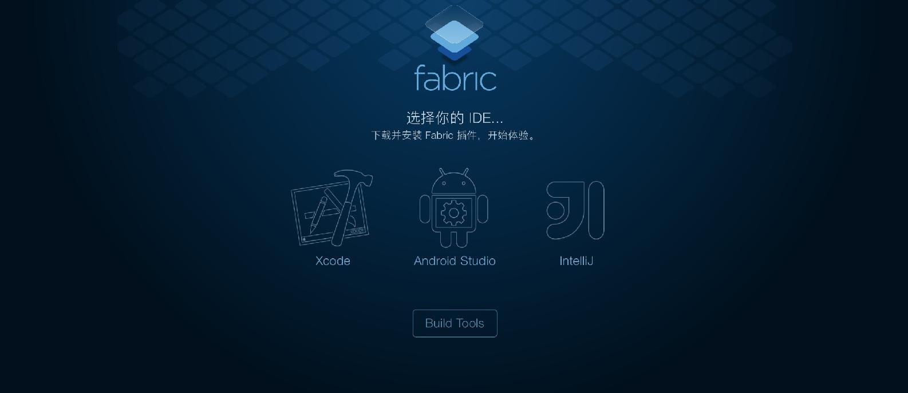
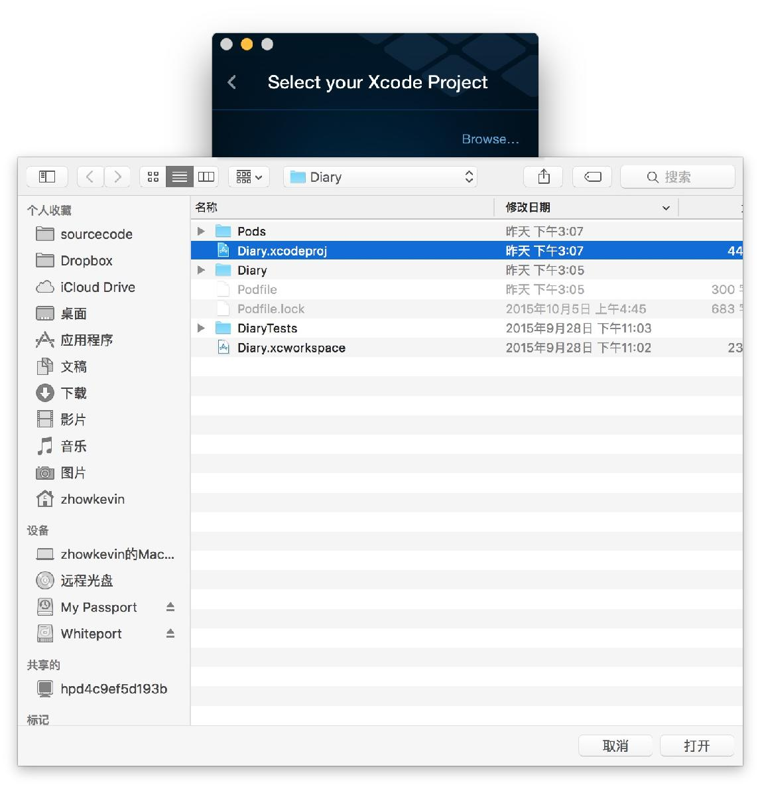
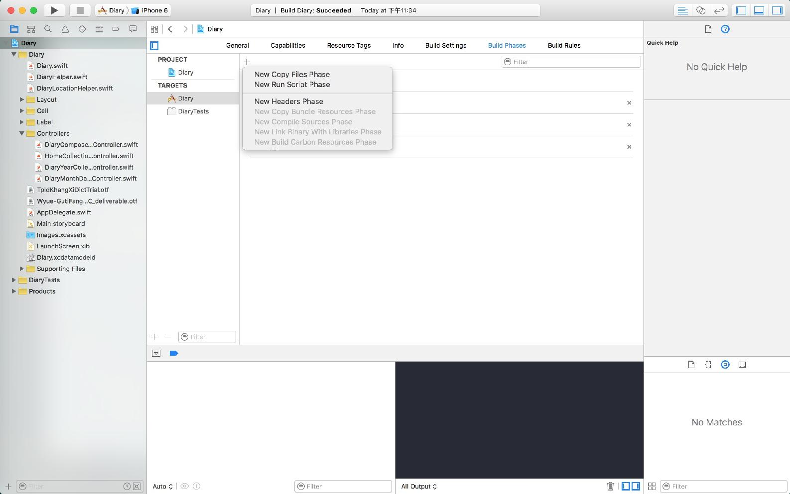
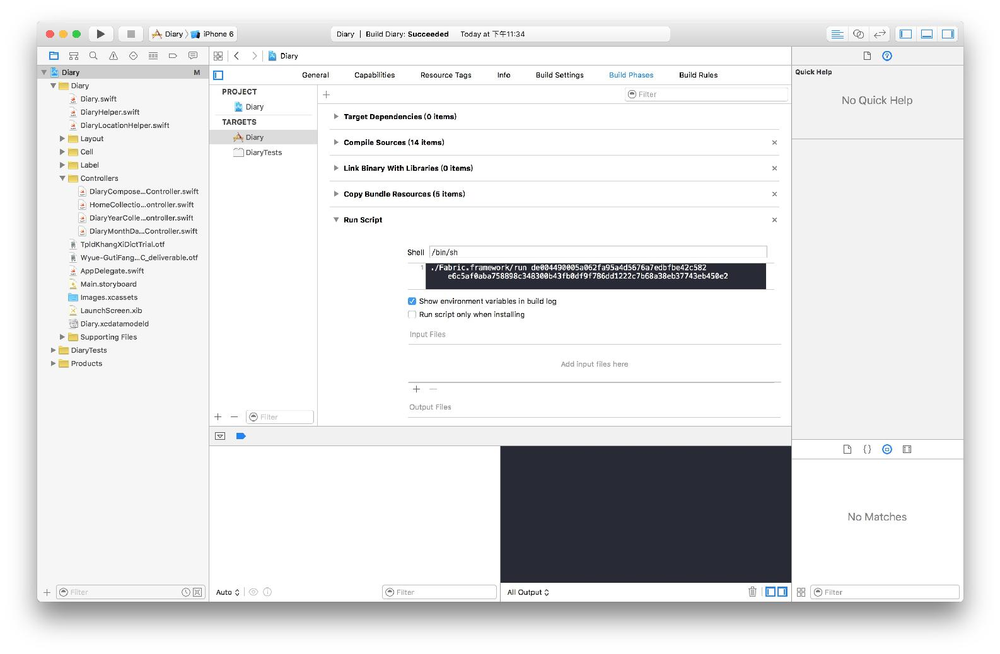
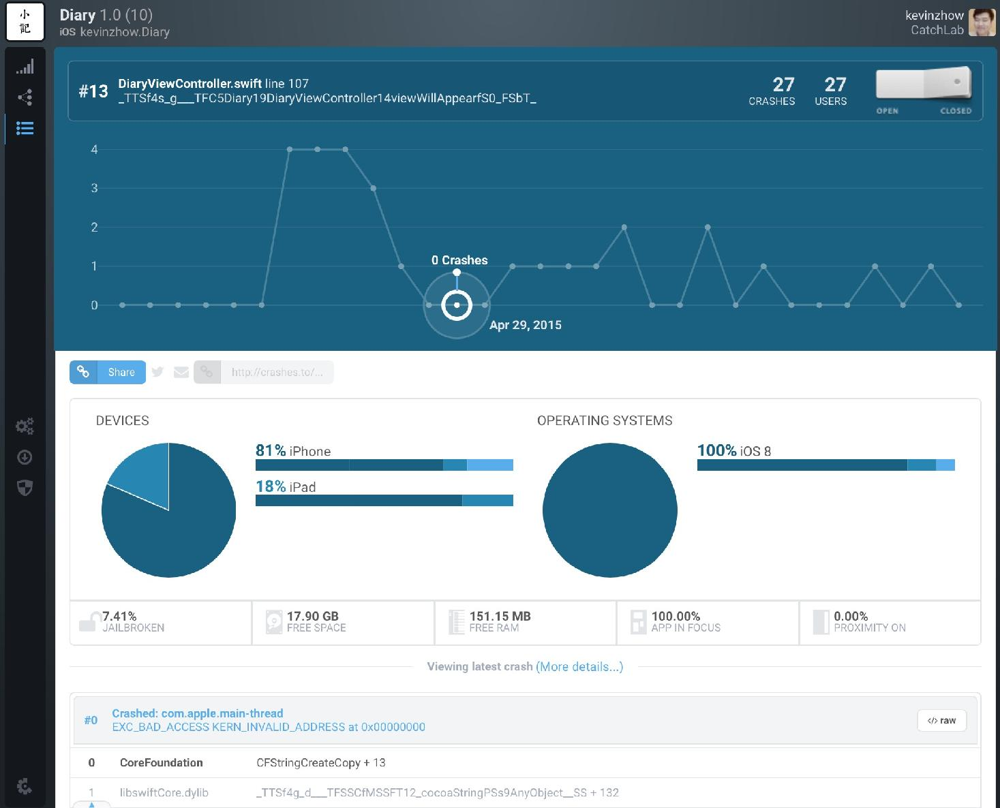

每个 App 都有崩溃的时候，在你手里崩溃并不可怕，在用户手里崩溃才是最恐怖的。更恐怖的是，他们高喊 App 崩溃啦，你却不知道原因。
Crashlystics 是非常优秀的错误和使用情况统计服务，现在已经被 Twitter 收购变成了 Fabric 的一员。
首先打开添加 App 页面

点击 Xcode 下载 Fabric 并打开，使用你注册的 Fabric 账户登陆。
点击 Add New, 选择我们的工程文件

选择安装 Crashlytics
接下来会提示你添加 Run Script
先复制步骤 2 中给出的代码，然后打开 Build Phases

点击左边的加号，添加 Run Script 把代码粘贴进去，然后按下 Command + B

当 Crashlystics 检测到你添加了新 App 的时候，就会提示你将 Framework 添加到工程文件，直接拖拽添加到你的工程里即可
再次运行，Crashlystics 会提示你添加运行代码到 AppDelegate
完成这步之后，再次运行 App，你的 Crashlystics 就准备就绪了。
当用户发生崩溃的时候，你会收到邮件提示，并且可能登陆 Crashlystics 官网查看错误信息。

Crashlystics 不仅会为你分析归类，并定位是哪里出了问题，而且还会告诉你 App 的用户留存等信息，非常实用。